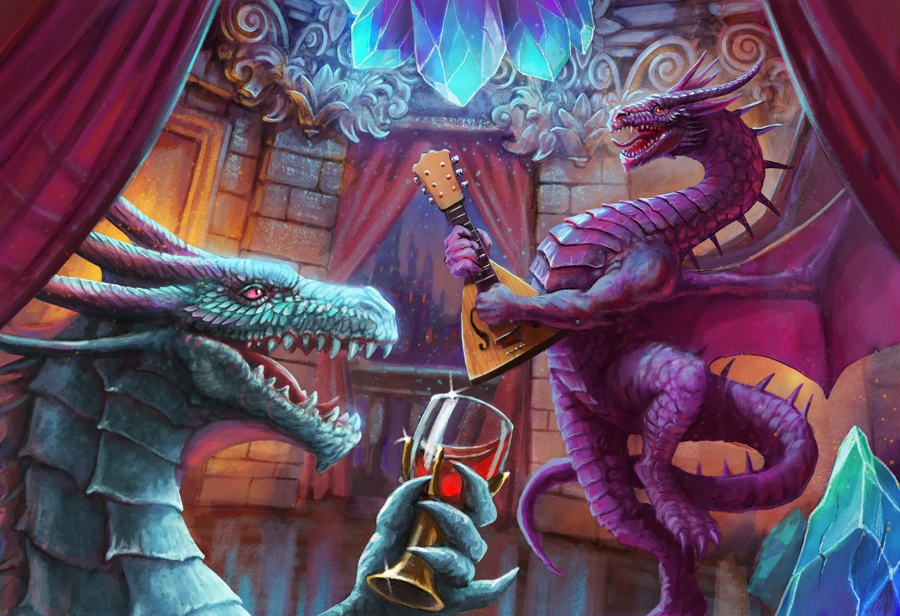
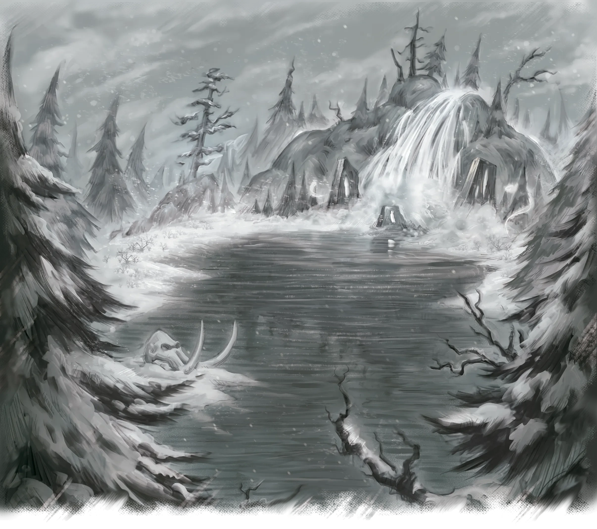
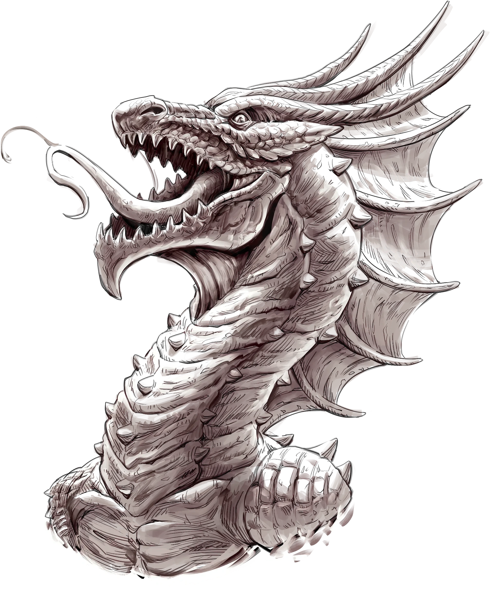
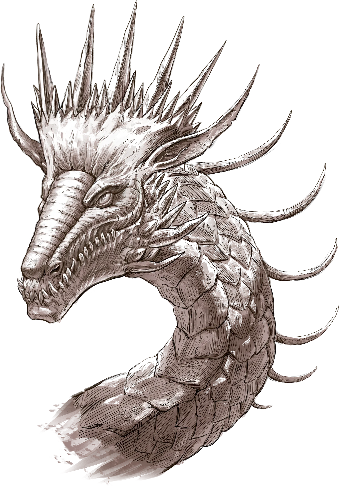
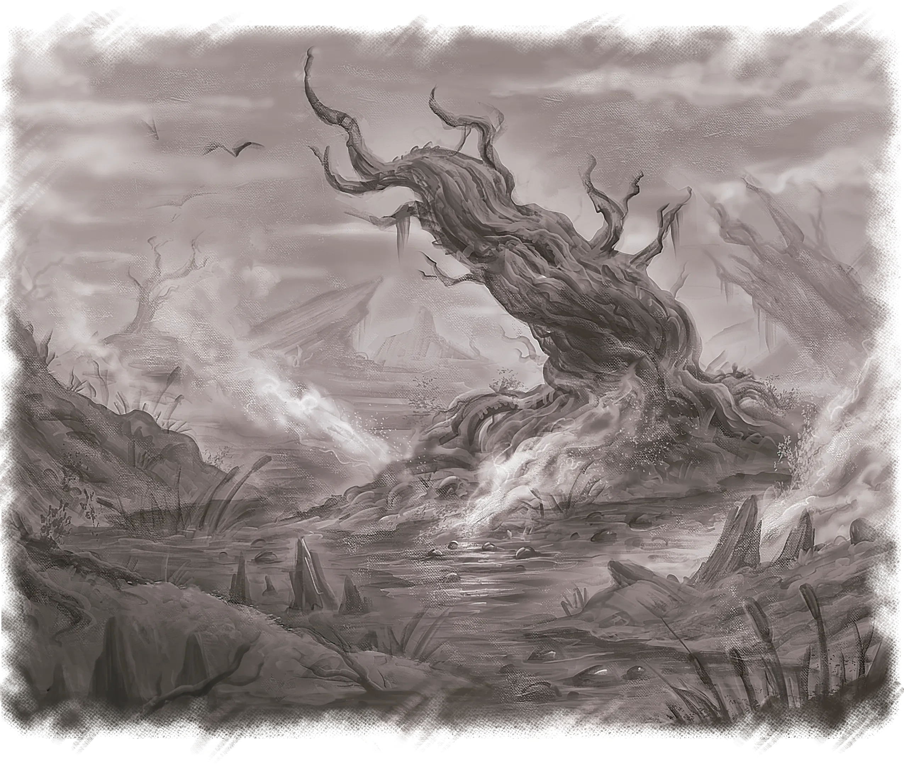
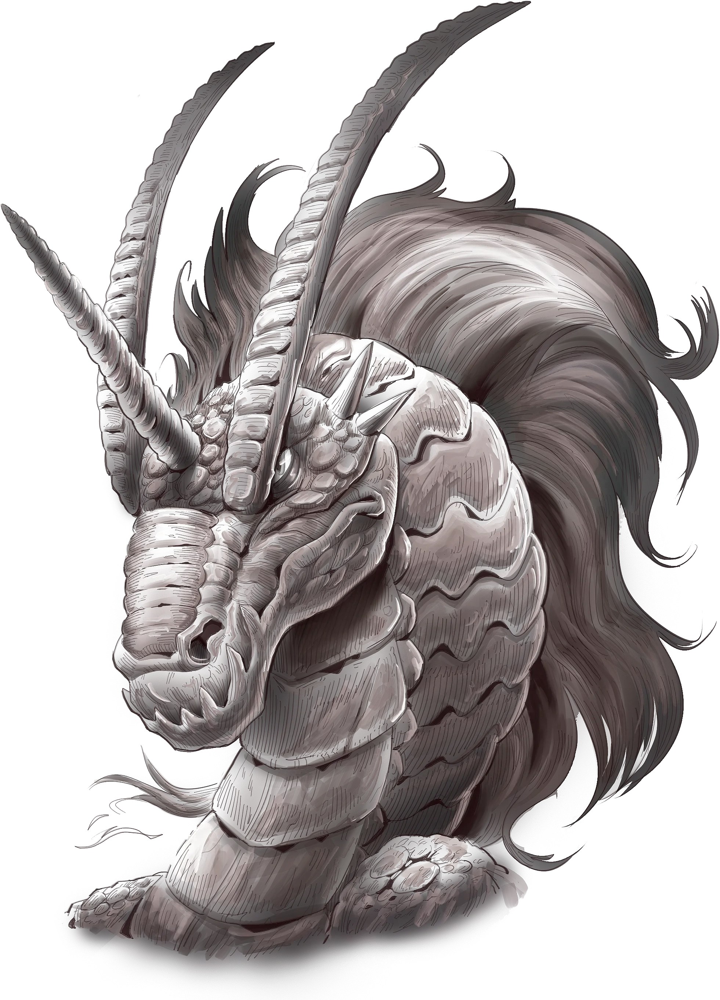
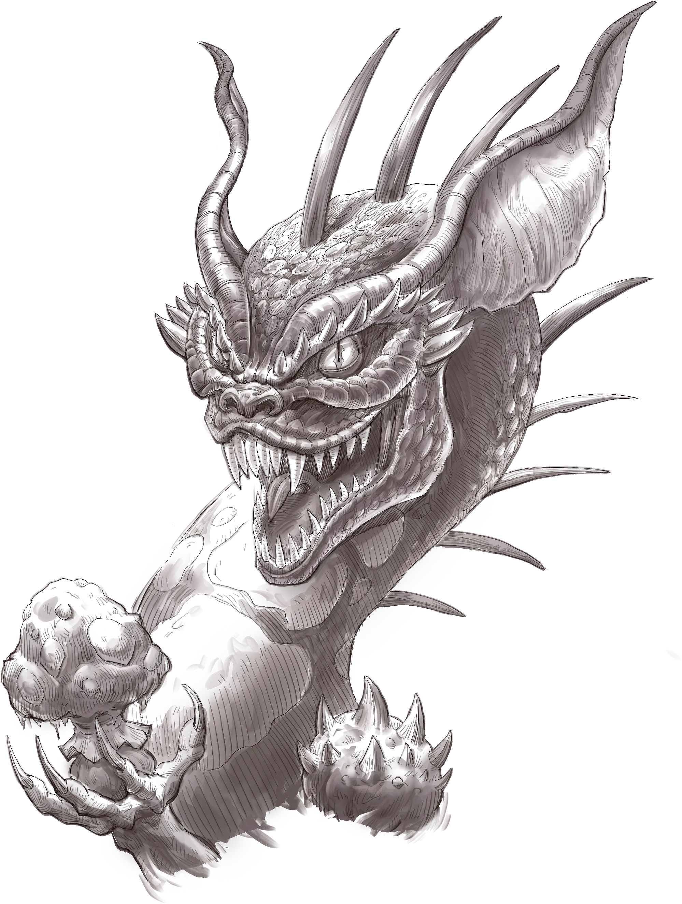
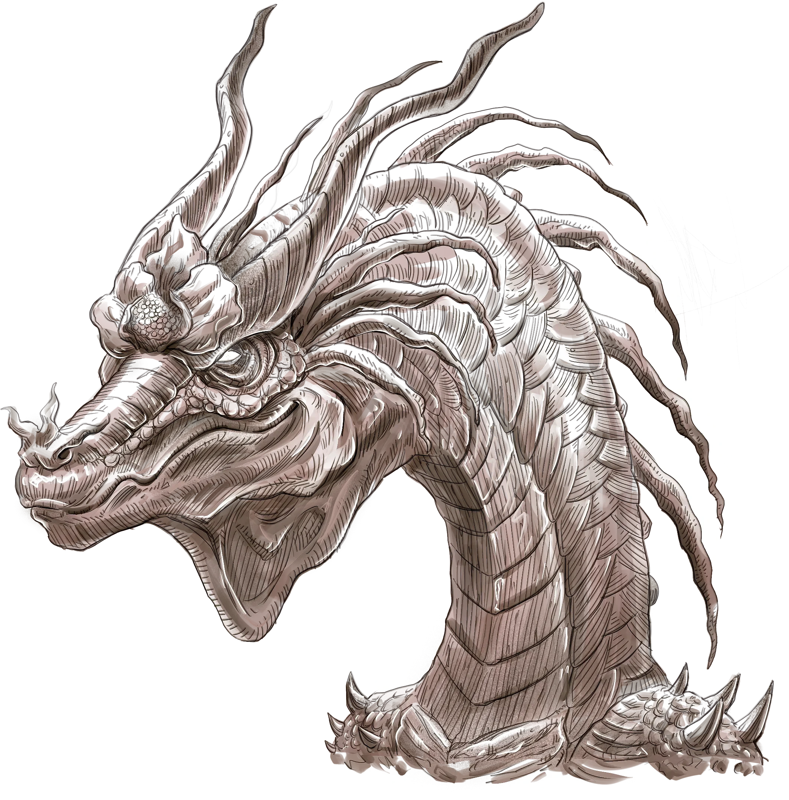

本章章节：仙境行前准备与生存指南 ・ 初入仙境 ・ 春华王庭 ・ 琼浆王庭 ・ 急转直下的运势 ・ 黑曜王庭 ・ 凋零王庭 ・ 迷雾王庭

启程之前，我曾在图书馆的长廊中耗费漫长时日，拂去古老典籍上的尘埃，研读其间褪色的墨迹，然而书页间所揭示的不过是最为飘忽不定、真伪难辨的零星真相。待到动身之时，我已经与某位天角龙结下了交情――他是一名冒险者，数年前亲自成功完成了永恒之光仪式。这场蜕变在同族间招致的恶劣反响迫使他流落凡间位面，但这段痛苦的境遇并未磨灭他天生开朗的性情；初见之后不久，我便成功赢得了他的信任。我从他那里搜集到的宝贵学识无论如何赞誉都不为过，接下来我也会继续与诸位一一分享。
话虽如此，倘若你想要踏入仙境这样的世界并毫发无损地全身而退――前提是你真能离开的话――单靠书斋里的学术准备是远远不够的！踏入这片仙灵国度之人，必须具备敏锐的头脑与直觉、对超自然事物的天生感悟，以及坚定不移的目标――一个绝不会被幻象与纷扰随意扭曲左右的目标。当心啊，读者！曾有远比我更伟大、更强横的生物踏入仙境，却从此一去不返。在你尝试效仿我的壮举之前，请务必谨记我的忠告。审慎研读本文能为你打下根基，而此后的路，便只能仰仗你自身的远见与洞察力了。
那么，在踏上前往仙境的旅途之前，你究竟必须掌握怎样的认知？熟悉我对治学怀有深厚热忱的人都明白，我绝不会轻易作出如下断言：在此地，事实与情感融为一体，二者完美和谐地共舞并主宰一切，自远古洪荒以来便缔造着独属于它们的法则与逻辑。若想踏入此地并存活下来，就绝不可将二者割裂开来，否则便有可能永远同时失去这两者。
亲爱的读者，我的旅程便是由此开启――始于这场事实与情感的交响共舞，因为进入仙境首先要求这两者在我内心达成平衡，化作一把无形的钥匙。当它们严丝合缝地契合就位，界域之间的大门便轰然洞开，而我也随之坠入了这个令人抓狂却又振奋不已的奇妙世界。

许多传说都曾讲到孩童误入未知国度，数十载后再度现身时却对光阴流逝浑然不觉――这类故事恰恰印证了开启通道往往需要好奇心与纯真无邪。倘若缺乏恰当的心境、微妙契合的情感，以及对奇观与冒险的向往，即便有人拼命叩击门扉，通往仙境的大门也依然会紧闭不开。事实与情感的交融在此处便已开始发挥作用：要踏入仙境，既须寻得一条无形的路径，又须在内心持有开启它的钥匙。我敢肯定，有些人宁愿那条路径是一片夺命沼泽，而钥匙就藏在某条正大发雷霆的狂怒龙血盆大口之中。
那么，年幼而涉世未深的孩童究竟是如何完成这般不可思议的壮举的？当孩童嬉戏玩耍时，总会有那么一个瞬间，他们发自内心地笃信自己所想象的一切：手中的木棍便是利剑，自家的房屋便是堡垒，后院的树林则是危机四伏的荒野――紧接着，毫无征兆地，这一切全都化为了现实。这些小家伙从嬉闹中抬起头来，周遭的世界已满是奇观，因为他们已然踏入了一个截然不同的崭新天地。
在大多数情况下，有幸从仙境归来的孩童都无法说清自己究竟是在何时、又是如何跨过那道门槛的。鲜有人具备掌控仙境及其传送门那转瞬即逝之魔力的能力；无论入口是否仍留在原处、抑或自始至终都未曾移位，许多人都苦于不知如何将其再度开启。这些入口徘徊于古木之间、城垣废墟之内、暮色笼罩的池塘之畔，无处不在，却又非未经训练的凡眼所能窥见。
当我得知自己必须前往仙境时，前文提及的那位挚友向我指点了一条线索――他在彼界游历时曾遇见过这样一个孩子。如今那孩子早已重返故里、长大成人，却声称自己依然知晓开启当年误闯的那条特定通道的钥匙。我当即动身前去拜访此人。
出于尊重，我不会指明自己最初造访的具体地点。只需说，那座古朴雅致的小镇坐落在一片巍峨山脉的山麓地带，即便是盛夏时节，清晨的空气依然寒彻肌骨。这位知情者早已料到我的来访，也深知我意欲火速启程，因此只在简短饮过一杯茶后，我们便毫不迟疑地动身前往我即将借之踏入仙境的所在。
令我大为懊丧的是，对方将我带到了一处冰冷刺骨的高山湖泊前。望着清澈见底的湖水，感受着空气中弥漫的超自然寂静，我当即明白自己必须潜入这片凛冽寒潭之中。我的这位新朋友随后也证实了这一猜想。
路径既已明朗，便只剩下寻找开启它的钥匙了。这位向导解释说，当年自己之所以误打误撞传送过去，是因为在青春的欢愉与自由感驱使下，觉得明日如何全不重要，便和衣一头扎进了湖水之中。只要我以同样的方式跃入水中，心怀荣耀与所向披靡的气概，便能冲破水面的束缚，踏入那片全新国度。
好了，读者，如今你当明白要握有这样一把钥匙是何等困难――尤其是当你早已领教过岁月与年华的沧桑疲惫之时。书本赋予的智慧与学识往往难以造就一颗无拘无束的心灵；然而在那一刻，当我很快独自伫立于水畔时，我却必须卸下心头的重担。
容我直言：我在那里耗费了数个小时，凝望着平静无波的湖面，生怕自己永远鼓不起勇气纵身投入它冰冷的怀抱；更担心一旦跃入其中，浮出水面时却依旧停留在这个世界，只是比跳下去前更加寒冷、更加沮丧。我凝视着、思索着，思绪渐渐飘远。最终，我将心神拉回眼前的难题上――我也无法解释自己究竟是如何做到的，只觉得脑海深处某处仿佛“啪”地轻响了一声。至于我是如何设法重拾年少欢愉的细节，在此便略去不表了――姑且说这与我生平第一次读到一部真正引人入胜的学术巨著时的体验多少有些关联吧――你只需知晓，我确实再度寻回了那种心境。随后，我纵身一跃。
当我破水而出之时，我瞬间明白自己前往仙境的尝试已大功告成。虽说跳水前那片森林也颇具一种深沉凝重的美感，但在眼前这绚烂夺目、几欲令我目眩神迷的万千光色面前，却顿时黯然失色。
眼前是一个焕然一新的世界――一颗跃动着色彩与光辉的心脏。原本林木耸立之处，如今尽数化作了繁花――那绝非寻常可供采撷的纤弱小花，而是狂野而硕大的巨型花朵，高高耸立于我头顶，空气中弥漫着难以言喻的馥郁甜香，直刺得我敏锐的鼻腔微微发痛。阳光穿透花瓣洒向大地，映照出我生平前所未见、此后也再未目睹过的斑斓色彩。简而言之，我彻底看呆了；我大概呆立原地凝望了许久才回过神来，猛然意识到自己已彻彻底底迷失了方向。
所幸，我想起了此前饮茶时那位误打误撞游历过彼界的线人所给出的忠告：他建议我借着叶片攀上高耸的花茎，在天际线上寻找一抹闪烁微光。依言照做之后，我很快便瞥见了对方想必所指的那处朦胧光斑――不过在此之前，眼前的意外奇景又一次令我屏住了呼吸。

仙境散发着一种广袤而奇谲的壮丽与绝美，举世无双。向上倒流的粼粼瀑布、彩绘玻璃般的池塘、蛋白石巨岩、柔若流水的蓝草――这片辉煌的国度宛如在放声歌唱。哪怕没有诡异的魔法来扭曲和分散心智，光是此间的万千奇景便足以令人心神迷醉。尽管我屡屡想要驻足细察，探究这片宏伟的生态系统究竟如何运转，但使命与紧迫感仍驱使着我向目的地前行。我承认，当时自己觉得此地安全至极，甚至对先前听过的一切危险警告产生了怀疑。
平心而论，我沿途确实见到了不少动物。仙境从不停歇，永远跃动着令人惊叹的生命形态。在那永恒的晨曦之中，我看见体型堪比、甚至超过其所停驻之巨花的蝴蝶，它们双翼上展露的色彩比我认知中世间存在的颜色还要丰富。相比之下，体型相仿的巨蜂就不那么令人愉快了――它们的尾刺足有我的手臂那么长。我悄无声息地从下方穿过，表明自己绝无威胁；即便在我走远许久之后，它们的嗡鸣声依旧一路尾随，震得老远之外的花朵都在微微颤动。还有一次，某个庞然大物在不远处走过，震得大地隆隆作响，一股腐臭气息扑鼻而来，令我阵阵作呕，但我终究没能瞥见那头巨兽的真容。
当我意识到自己已许久未曾核对方向时，我越发觉得自己宛如巨兽丛中的一只小虫，于是再度攀上繁花森林的顶端。我寻找了不知多久的那片闪烁薄雾此刻正弥漫在周遭的空气里；紧接着，我脚下所踩的叶片猛然向下倾斜，我的胃部一阵翻腾，整条龙向着下方大地直坠而去――不料半空中却被另一片叶子稳稳接住，又将我高高抛起；随后我再度被接住、抛落、接住、抛起，俨然陷入了一场惊心动魄的抛接球游戏，而我自己似乎正是那颗球。我猜想必定是某个生物的魔法在施展这番活泼的恶作剧，于是索性放声大笑、欢呼喝彩，心想这样的反应定能博得东道主的欢心。
这一判断果然奏效，我感到自己终于被稳稳当当地送回了林地地面。身后传来一阵轻巧的振翅声，宣告着我首次会面的成功：名为达鲁迪的皮克精龙出现在我面前，正哈哈大笑着，显然对我面对他这场游戏的反应颇为满意。
达鲁迪允许我就皮克精龙这一族群提出了诸多问题，其答案诸位将在本书的其他篇章中读到。此外，我还深入了解了当地的春华王庭――那是一座洋溢着青春欢愉与新春喜悦的王庭。他所分享的一切，都与我迄今为止的亲身经历和见闻不谋而合。
我从达鲁迪口中还获悉了另一则对我此行至关重要的情报：在仙境的任何特定领域内，某个生物的力量越是强大，那片地域就越会根据该生物的情感来重塑自身。达鲁迪纯粹的喜悦为这片土地带来了安宁与生机，而在我此后游历的其他地方，可就没这么好运能遇上这般乐土了。误入达鲁迪领地的孩童无疑是幸运的，因为他们在这里只会遇到热情款待与无穷欢乐。只是，能有这般好运的人终究寥寥无几。
我自然向这位和善的东道主说明了自己的来意，而他也慷慨提出为我弄到一份前往琼浆王庭的邀请函――那是一座坐落于看似近在咫尺的高山之下、极尽华美的宫殿。与其赘述我获准通行所历经的联络细节，不如让我先解释一下往来于仙境不同领域与王庭之间的重重难处。
在仙境之中，即便某条道路看似笔直平坦，这里的路线――有时被称为“秘径”或“仙径”――却往往拥有自己的意志，会随心所欲地交织变幻。旅人若想穿越一片开阔平原或古老森林，通常也需要一把“钥匙”，一如最初踏入仙境时所需的那样。举例而言，你或许想要走过一条险峻的山腰小径，却发现除非自己倒退着行走且绝不回头看上一眼，否则根本寸步难行；尽管完全违背常理，但以这种方式赶路反而会安全、迅速得多。穿越沼泽时，或许需要你主动沉入泥沼，而非从表面跋涉而过。而若想抵达某座王国，你或许唯有背道而驰，同时高声宣称对于自己这等乞丐而言，那里的街道实在太过华贵，方能如愿抵达。
倘若在错误的时间或地点做出这些举动，轻则会让旅人无可避免地迷失方向，重则自然会招致横死夭折的厄运。许多精类原住民乐于靠为不熟悉这片迷乱地形的外来者担任向导来发家致富，尽管他们索取的报酬在观光客看来往往古怪至极。仙境生物可能会索要你童年最心爱的一本书、从恰好育有三个孩子的母亲花园里采下的一朵花、一把举世无双的精致汤匙；在更为离奇的情况下，他们甚至会索要你蹦跳的能力、用G大调歌唱的能力、你头发的颜色，或是你总想去同一家集市购物的执念。倘若这些要求未能分毫不差地得到满足――比方说采来的那朵花属于一位只育有两个孩子的母亲――向导或许仍会提供带路服务，却会拒绝将雇主送回原本的故乡位面。
具备精类思维方式的存在绝不会觉得这种行径反复无常或令人费解，反而会认为它合情合理至极。未能妥善履行契约条款的责任，确实完全在于求助者自身――除非他们不慎挑中了一名背信弃义或格外狡诈的向导。
为了抵达我的下一处目的地――一条王庭龙的巢穴，我发现自己正穿行于错综复杂的地下隧道之中，而我得到的明确指引则是：唯有故意迷路，方能找到正途。对于像我这样本想在手记中详尽记录每一处曲折拐弯的学者而言，这项任务实在艰难无比。为了彻底分散自己的注意力，我索性在心中默诵几天前偶遇的一本诗集，全神贯注于作者惊艳绝伦的遣词造句；没过多久，我便发现自己已然抵达了目的地。

这处洞窟并未镶满璀璨夺目的宝石，而是垂挂着生长在藤蔓上的华美果实――颇似葡萄园里的葡萄――从高逾头顶的穹顶垂落，自两侧岩壁间蔓生，一路铺满小径两旁，令踏足此地之人的鞋履很快便染上一抹殷红。一位身着王室华服、发丝与眼眸皆如红宝石般殷红的希族上前迎接，引我步入一座令人叹为观止的宏伟厅堂，厅内陈列着数不清的酒杯，竟无一盏重样。一股陌生的肉香从某间隐秘内室飘来，东道主麾下的众多侍从往来穿梭，姿态优雅流畅得令我一瞬间还以为自己踏入了某条无形的地下暗河。
待我略定心神，方才那位希族便领我前往一间可供沐浴更衣的居室，并为我留下了一套足以匹配王者身份的礼服。等我彻底洗净风尘、换上这身看似契合场合的装束后，阿莫克雷亲自前来迎接――那是一条威严的王庭龙，双角在头顶盘曲交错，宛若一顶嶙峋王冠。阿莫克雷冷不防向我行了一个庄重的屈身大礼，随后引我步入宴会厅，我们在那里纵情欢宴了数个小时。
没过多久，一股紧绷的倦意便席卷了我的心神；我一边竭力奋笔记录，一边将耳中所闻与行前的研究资料相互比照，渐渐看穿了他拼命想要改写的那段隐秘叙事――纵使美酒佳肴与锦衣华服竭力加以粉饰，那段宿命却早已悄无声息、无可逆转地向他逼近，甚至让我怀疑他是否意识到自己的结局已然降临：我这位东道主的心智正在日渐衰退，而为了逃避这一宿命，他已经彻彻底底陷入了绝望。
请诸位放心，在整段旅途中，我已向其他知情者逐一核实了自己所写下的一切关于王庭龙的内容，并剔除了他所传授的那些仍存疑虑或明显失实的信息。但在那场漫长的宴席间――事后回想起来，我根本无从知晓我们究竟对坐共饮了多久，只怀疑实际流逝的光阴远比我当时感觉到的漫长得多――我的东道主倾囊相授了他所知或自以为真实的一切，随后便宣布他那一边的交易已经履行完毕，现在轮到我履行自己的诺言了。
亲爱的读者，倘若你此刻正好奇我究竟达成了一桩什么性质的交易，我必须承认，在当时那一刻，我自己也根本无从猜起。显然，在此前的某个时刻，他曾随口插了一句关于“礼尚往来之重要性”的感慨，而我当时点头表示赞同；自那一刻起，双方所分享的一切想必都被视作了等价交换的筹码，其中自然也包括知识的分享。宴席将尽之时，我的躯体沉重不堪，心神因极度疲惫而麻木，却又敏锐地意识到自己必须保持警觉――就在此时，他开口要求我将自己所知的有关永恒之光仪式的一切悉数相告。随后，这位东道主吐露了自己的盘算：他打算借由这场必定能带来刺激与冒险生涯的仪式，逃避最终困死于自身残破心智中的宿命。

我自然知无不言，然而他提出的问题与插话却清楚地表明，我的阐述落入了一双困惑迷茫的耳朵里。尽管这项仪式绝无可能由他人代劳，他却反反复复地追问究竟要如何才能让旁人替自己完成仪式，随后更是突兀地宣称，待好好休息一晚之后便必须立即举行仪式。意识到自己实际上被勒令在明日去完成一件绝不可能办到的事，你大可想象我当时是何等忧心忡忡。
万幸的是，还没等我尝试歇息，他众多臣属中的一员――另一位希族，看样子似乎担任着东道主的顾问――便设法引起了我的注意，并引我走上了一条能够逃离洞窟的小径。尽管我的身心都在苦苦哀求睡眠，但我深知这是自己脱身的唯一良机，于是毅然向前赶路，将那身已令我隐隐感到不安的华美礼服留在了身后。
这条小径远比来时的路直接得多，它将我送入了一片沉闷得令人头昏脑胀的沼泽地：腐臭的蓝紫色气泡在浑浊的水面上浮沉，浓重刺鼻的沼泽瘴气钻入鼻腔，将琼浆王庭里那些精致香料的残存记忆吞噬殆尽。头顶的天空死气沉沉、昏暗凝滞。我四下搜寻任何能指引我相对安全前行的路标，却一无所获。看样子，我已被引向了一片荒野之地――一片不受任何单一情感生物或其他力量统治的无主疆域。
亲爱的读者，倘若你有朝一日发现自己身陷此等境地，我最好的忠告便是：只管咬牙前行，寻求救援或解脱，并时刻保持心智清明。由于没有强大的精类统治这些土地，此地的一切地貌特征都比别处更加变幻无常；某棵大树看似适合在树上安稳过夜，却可能在睡梦中朝相反方向疯长，等你醒来时，便已将你抛在了远为凶险的境地。尽管你可能觉得自己已被世界遗弃，但四周其实潜伏着数不清的生物，在这片混乱浑噩的疆域中繁衍生息。你可能会撞见格外讨厌的捣蛋妖或小仙灵，又或者更有可能遇上那些不知出于何种缘由、无法在仙境王庭疆界内安然容身的精类。
我屡屡被无形的力量暗中掐拧，或是被一把推进原本并不存在的水坑里。有时这些恶作剧之后会传来阵阵嬉笑，但更多时候――也更令人毛骨悚然的是――四周一片死寂，唯有某种存在蓄意彰显自身行迹的确凿感萦绕心头。奇异的海市蜃楼在我眼前摇曳浮现，许诺着绿洲与通往更优美、更有序之地的出口。然而，我沿着这些路径走得越久，周遭的地形便越发凶险；我很快意识到，朝着这些许诺中的避风港反方向行进反而更为安全。我只能暗自祈祷，自己这番谨慎防备的举措没有让我错失真正的出口。
惭愧地说，我承认自己的意志几乎开始动摇。我此前便听说过这类可怕的绝地――困于其中之人几乎休想逃出生天，也没有任何活物会向可怜的迷途灵魂伸出援手、指引安全之地。我究竟在那里度过了数个小时、数天、数月，还是数年？老实说，即便我竭尽所能去推算，恐怕也永远无从知晓了。

当我最终逃离那片黑暗可怖之地时，靠的是重整旗鼓的沟通尝试。尽管我不具备与远方陌生人交谈的魔法手段，但我深知自己正身处一片充满无限可能的国度。因此，我坚持不懈地放声开口，仿佛正在与一位老友畅谈，只盼某人能以某种方式听见我的话语并向我伸出援手――哪怕只是为了能与我把这场交谈继续下去。不可思议的是，这个办法奏效了。当我下一次头枕着一棵树皮蓬松柔软的大树――并非青苔，而是货真价实的树皮――沉沉睡去后，醒来时脑袋底下已垫上了柔软的枕头，宜人的光线正从一扇敞开的窗棂间倾泻而入。清新的空气从未尝起来如此纯净甘美。
我心知自己必定是来到了某条天角龙的领地。再没有哪位东道主会备下如此洁净挺括的床单、光泽恰到好处的石墙，以及精美的艺术画作――细看之下，那些画作所用的油彩皆是直接萃取自花蕾与叶片的天然色泽。我向窗外望去，只见一片辽阔的黑色黑曜石地貌铺展至远方，高低错落的热泉水池点缀其间、彼此交汇流淌，不远处更可饱览大海的绝佳景致。海浪轻柔安详地拍打着海岸，仿佛正受某位唯求最宁静、最美好环境的存在所抚慰掌控。
倘若你读过我关于天角龙的考察札记，便会发现眼前的景象与我所描述的一切全然吻合。对于我这位不久后便得知其名为伦费尔的新东道主而言，这片领地便是其艺术作品，而守护它的纯净无瑕则是至高无上的庄严要务。哪怕我们之间有关本书著述的正事早已谈妥，对方仍慷慨准许我在其领地内多作盘桓，对此我深怀感激。
黑曜王庭为形形色色的精类生物提供了一处安全的家园。此地的居民行动相当缓慢，并不急于完成任何特定的事务，却又时刻沉浸在某种令人愉悦的雅兴之中。我遇见了不少水精，还见到了身躯庞大却性情温顺、由与大地同质的黑色岩石构成的生物――即便不慎坐到它们身上，它们的反应也颇为通情达理――此外还有好几位陷入沉思的希族，他们身旁往往摆着摊开的书卷或手记，偶尔才会拿起笔读上一两句或写上一两行，随后又将书卷搁在一旁，再度静坐良久。
想来在他们眼中，为了治学严谨周全而奋笔疾书、飞速记录周遭一切的我，举止多少显得有些古怪。我暗自好奇他们究竟能活多久、又意欲成就何事，因为尽管天空中那抹柔和的光芒从未褪入黑夜或迎来新昼，我自身却依然敏锐地感知着光阴的流逝。
我也同样不禁思忖，自离开故乡位面以来，究竟已经过去了多少岁月。每一次踏入仙境的新领域，都伴随着时间流速远快于或远慢于其他领域的风险。在大多数王庭中根本没有昼夜更替可言，我无从得知光阴究竟是在以难以想象的速度飞逝，还是正像我这些新同伴一样缓慢踱步。我想起自己终究得寻获足够强大的魔法，方能将我送回故乡、送回正确的年份。然而仙境之中的王庭与领域看似无穷无尽，我实在不知自己究竟还要踏足多少处地方，才能寻得这样一位能人。
诚然，仙境中的生物各自遵循着独一无二的作息，绝无重样。他们在不同的时刻安眠，在另一些时刻进食，却无时无刻不在嬉游作乐。有些生物醒来只为举办一场晚宴；另一些则根本从不睡眠，而是永无止境地作画、侍弄花草，或是创作唯有他们自己能懂、唯有从某个特定角度才能看清、抑或根本毫无逻辑可言的绘画与雕塑。
只要参与他们众多活动中的任何一项，哪怕只有短短片刻，便意味着你默认要将这项活动奉陪到底。宴会何时散场，你在场的时光便何时结束――绝不可提前离席，更不可散场后仍赖着不走。若是与一位同伴共浸一池温泉，便等同于向对方表明你们已在这件事上结为搭档；当其中一人起身出水时，另一人也必须随之起身，否则便有失礼冒犯之虞。不过，尽管这些陌生社交准则充满变数，我仍得承认自己应对得相当得体；待到启程离去之时，我向好几位虽性情奇特却颇为投缘的新朋友一一道别。
至于下一处领域，我打算略过旅途细节，转而着重描绘它那极其令人不快的本质。
在寻访诡谑龙之时，我深知一旦踏入其领地便必须万分小心。先前皮克精龙将我抛向半空的欢快恶作剧，若是换作性情更为恶劣的诡谑龙，哪怕我展开双翼借以抵消寻常重力的下坠，最终也大概率会落得被摔进尖石堆或无底深坑的下场。我打起十二分精神，时刻提防任何险恶阴谋。
我最终抵达的这片领域在好几个方面都与我初入仙境时的第一处领域遥相呼应：同样是并非由树皮与枝叶构成的参天巨木――只不过在这里尽数换成了巨型蘑菇；头顶同样有庞然大物振翅盘旋，但性情却要暴躁好斗得多，嗡鸣声不绝于耳。我见到的不是巨型蝴蝶，而是巨型蟑螂，取代蜜蜂的则是硕大无朋的胡蜂。这里的蘑菇全都散发着一股腐烂恶臭，不过在暗中静静观察了一处捣蛋妖营地数个小时后，我还是学会了分辨哪些蘑菇可以安全食用。
我也渐渐明白了为何会有生物愿意留在如此令人作呕的地方：这里有着取之不尽的食物与藏身之所。尽管四下潜伏着众多面目可憎的生物与怪兽，但到处都有充足的隐蔽空间，而每一处藏身点里又长满了更多的蘑菇。只要懂得分辨哪些蘑菇无毒可食，任何栖身此地的生物都能享用永不落幕的盛宴――因为尽管这些菌类气味奇臭无比，其中许多品种尝起来竟出人意料地鲜美宜人。若是换成一位毒蕈龙美食家，到了这里定会乐不可支！

四处游走期间，我遇见了好几个在这片领域长大的生物，他们向我讲述了统治此地的诡谑龙的种种事迹，以及自己在这片阴湿森林中的亲身经历。仙境中的许多生物都会演化出与周遭环境相呼应的生理特征，这不仅是为了获得有效的保护色伪装，更是为了展现自身与天地环境的深切共鸣。居住在凋零王庭的生灵皮肤上长出了蘑菇，发丝间也蔓生着青苔。倘若将一名树精从这片领域连根拔起、移置到黑曜王庭之中，只要假以时日，她便会再度发生改变，重新与新环境融为一体。一想到倘若自己在此逗留太久会发生何等异变，我便不禁毛骨悚然。
凋零王庭昔日曾是一副截然不同的风貌：当某个足够强大的新生物迁入仙境的某一隅――在此例中便是我所寻访的那条诡谑龙――她体内固有的浩瀚魔力便会重塑周遭的世界，而非由该生物去迎合世界。这片土地原本是一座明媚宜人的森林，林间遍布清澈见底、常被用于占卜的活水池塘；只因太久没有魔力尤为强大的存在坐镇，当这条诡谑龙迁居至此，便轻而易举地按自己的意志扭曲了整片森林。
许多受访者都向我控诉了这条名为德卡伦的巨龙对这片领地及其臣民施展的残忍恶作剧。众所周知，她热衷于将无毒蘑菇与剧毒蘑菇重新涂抹变色，令误食毒菌者陷入有时甚至永久无法痊愈的错乱状态。凡是在显眼处搭建的房屋，她都会亲手摧毁，偶尔也会指派宣誓效忠于她的捣蛋妖代劳。这群捣蛋妖同样热衷于在看似安全的场所布设陷阱，并在小型聚落尚未成型之际便将其强行鸠占。
换言之，我置身于一处凄惨可憎的绝境，竭力想要摸清诡谑龙的方方面面，却始终未曾与那位幕后主宰照面。起初我一直捉摸不透德卡伦究竟想要囤积怎样的宝藏，直到我猛然想起情感与仙境之间那密不可分的羁绊。我由此断定，在她这座凄惨的凋零王庭之中，她所囤积的必定是某种形态的光明或喜悦。
我绝非戏言。这里永恒的黑暗、所有居民低落消沉的心境――当然，那群捣蛋妖除外――乃至那些原本在火把映照下理应多少泛出一点光泽、如今却黯淡无光的光滑湿润蘑菇，无一不在指向某个正主动汲取一切闪亮情感与微光的生物。而且德卡伦根本无需为此费多少力气：我在那里停留得越久，就越觉得自己的动力与希望正在眼前一点点褪色消散，仿佛它们正自己长出双脚、离我而去，一步步迷失进幽暗的森林深处。在仅凭最后一丝微弱心弦死死拽住它们之际，我终于惊觉究竟发生了什么；既已学到了自己所能探知的一切，我便迫不及待地告辞脱身了。

在游历仙境的整段岁月里，我还曾穿行过许多其他领域――数量之多，远非这篇记述所能尽数收录；在那些地方，情感与道德往往扮演着更为暧昧难明的角色。有一处遍布滚烫黄沙与沸腾热泉的领域，按理说本该给人以酷烈严苛、毁灭一切的感受，然而在那里，我的舌头从未感到一丝干渴，体力也从未因酷热而衰竭分毫；我由此断定，无论统治那片土地的是哪位精类生物，对方必定兼具危险与仁慈双重特质。另一处拥有林荫空地与开阔秀美原野的领域里，则无时无刻不弥漫着一种正被人暗中窥视的感觉――而且那绝非善意的目光，尽管我在那里自始至终都未曾瞥见半个人影。还有一处领域，夜空中永远缀满调皮眨眼的繁星，每当我穿行其下，群星便仿佛在提醒我某个唯有我们彼此心照不宣的玩笑；离开那里时，我心头却莫名萦绕着一股深沉的哀伤。
不过，亲爱的读者，我的旅程终究还是迎来了终点――否则你此刻也读不到我的这篇游记了！几经周折，我终于寻得了迷雾王庭，开启了我此行的最后一段冒险。
迷雾王庭的入口四周环绕着重重飞瀑，升腾的水雾将内里的绝美风光――包括那位魅心龙本尊的芳容――尽数掩映其中，此地之名也正是由此而来。诚然，在走完漫长而艰辛的旅途后，我最终踏足的这片领域实在美得令人词穷。
与凋零王庭截然相反，此地的每一处表面都流淌着柔和的光辉，尤其是我穿行而过或擦身而过的无数大小瀑布所溅起的晶莹水珠，更是熠熠生辉。我攀上巍峨高处，伫立于观景台远眺，只见一片神圣天地在眼前豁然铺展：云朵宛如嬉戏追逐的孩童般彼此追赶，林木则在欢快至极的狂喜之舞中摇曳生姿。我觉得任何画师若是站在此刻我所立之处，恐怕都会在试图捕捉那份律动、那股生机、那抹超凡脱俗之辉光的过程中彻底迷失自我。我来到了一片真正纯粹向善的乐土；这片领域确乎完美映照出了其主宰巨龙的本质――那位名为贝尔莎的魅心龙，而我最终也有幸与她当面相见。
绝美与凶险、诙谐与庄重，在仙境中皆处于一种混沌而和谐的共生之中，宛如同一颗心脏般齐声搏动。世间万物在此地都被推向极致，万物皆有灵性、皆在呼吸吐纳――无论是因被人一脚踢进水洼而愤愤不平的鹅卵石，还是因被兄弟们抛在身后而倍感孤单的一朵浮云。
在迷雾王庭逗留期间，我完成了自己关于仙境的全部著述，并有幸结识了贝尔莎――直到会面时我才得知，早在我踏入此地之初，她便已在暗中默许并庇护了我的停留。待到我们长谈将尽之时，一层迷离薄雾再度笼罩了我的心智，只不过这一次其中满溢着令人心旷神怡的宁静祥和。透过那层轻雾，我明白自己不久后便该动身返乡了；倘若不是贝尔莎主动催促我说出自己究竟需要在何时、返回何处，我恐怕还会在那里多盘桓许久。
片刻之后，我发现自己站在了一道瀑布近旁，心头涌起一股强烈的冲动，想要径直走入水帘之中。我并不认为这种感觉源于魔法强迫或任何外在效应；相反，我确信当时的自己已然深感归期紧迫，是自身的本能驱使着我穿过那道水流向前迈步。浸入飞瀑之后，我在水帘背后发现了一座伸手不见五指的漆黑山洞，便顺着洞穴一路向前走去。尽管眼前一片漆黑，但我很快便感到空气中透出一丝寒意。我能察觉到，某种变化正在悄然发生。
当迷雾散去、光明重现之时，我发现自己又一次站在了那片熟悉的湖畔。恍若唤醒了一段童年记忆一般，我清晰记起了返回附近那座小木屋的路径。我当即迈步启程――历经了这一切磨难之后，我想自己理应享用一杯暖人心脾的热茶。
我坐在温馨舒适的小木屋里小口啜饮着热茶，一边用毛巾擦干鳞片上的水珠，一边细细回味着这趟异界之旅所收获的一切：种种宝贵的教训、几次与灭顶之灾擦肩而过的惊险，以及沿途结识的挚友。仙境既与我行前预想的分毫不差，却又远远超出了我想象的极限。
在这篇文字里，我已竭尽所能向你描绘踏入那样一个世界究竟是何等体验――在那里，思想、情感与故事皆能塑造你周遭的天地。然而，亲爱的读者，我恐怕自己的笔墨终究难以尽显那段经历的万一。关于这场危机四伏的田野考察，倘若有一件事是我能向你确凿无疑地保证的，那便是：唯有亲身经历过仙境，方能真正理解仙境。即便如此，即便身为一名资历卓著的学者，我也不敢夸口说自己已将其彻悟透彻。既如此，接下来要做的事便只有一件了：围绕这一课题开展更深入的研究！
――永光贤者卡利赞德雷克斯